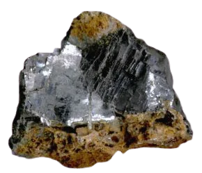

Blood in the mobile
Cassiterite
Cassiterite, of cassiteriet is een mineraal dat veel voorkomt in het westen van Congo, het wordt vooral benut om Tin van te maken. Door zijn natuurlijke eigenschappen zijn deze mineralen vaak geclusterd in grote ertsen.
Tin is een essentieel component in elektronica, auto's en veel andere industrieën. Vaak wordt cassierite gevonden in dezelfde mijnen als Coltan, in de mijn waar chance werkte, werden beide mineralen opgegraven. Congo is niet de grootste exporteur van Cassiterite. En deze wordt niet zozeer als een "conflict mineraal" gezien, in tegenstelling tot Coltan. De prijs voor Coltan is vele malen hoger op de internationale markt.